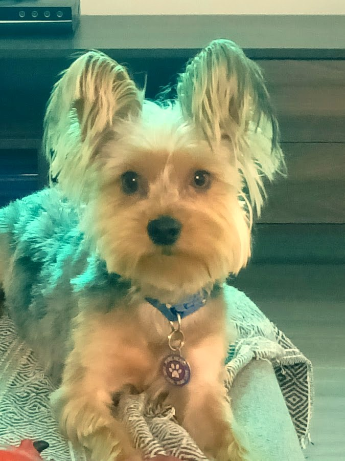
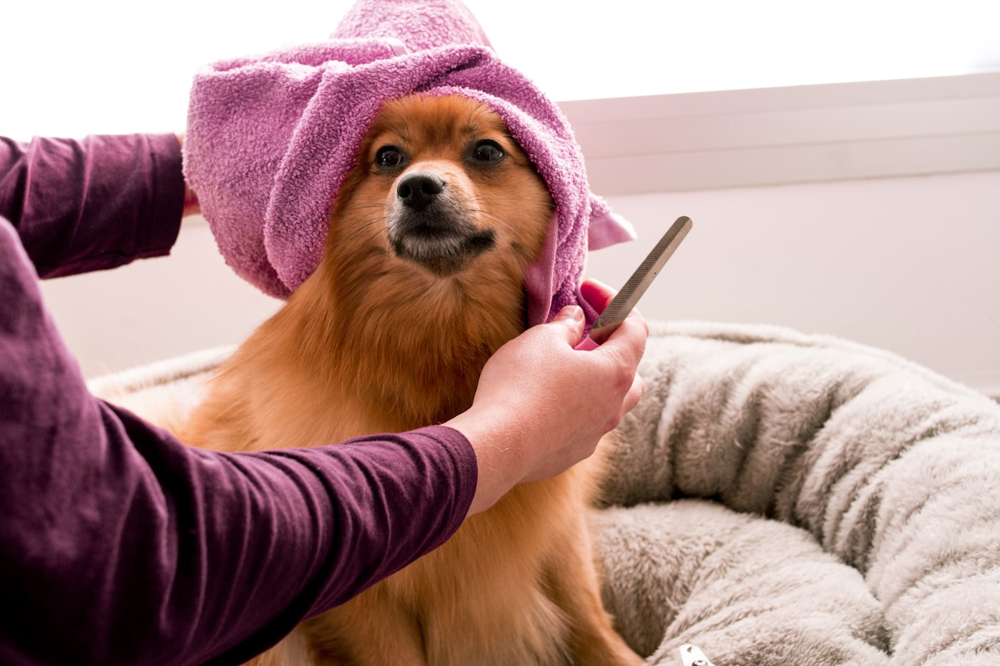
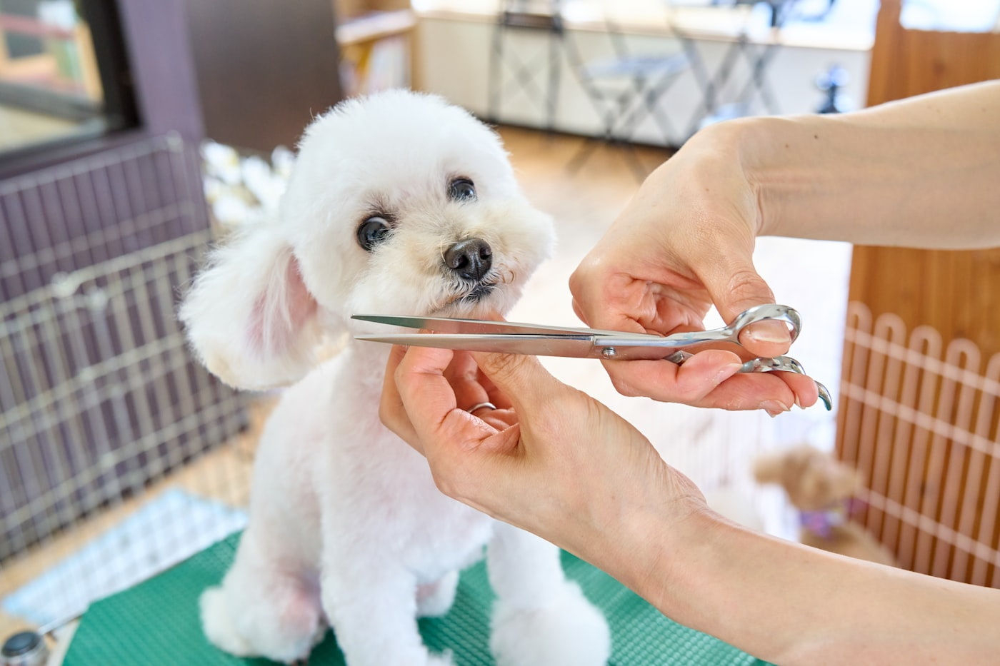
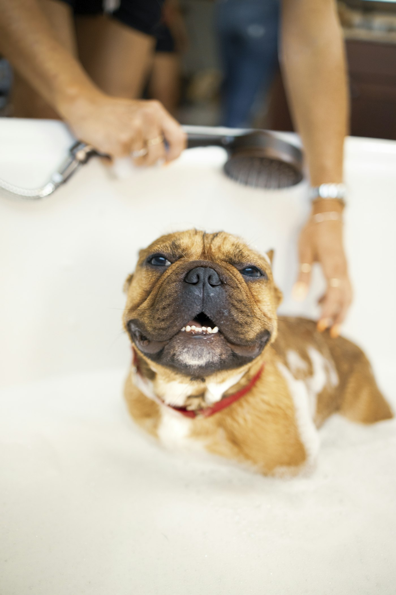
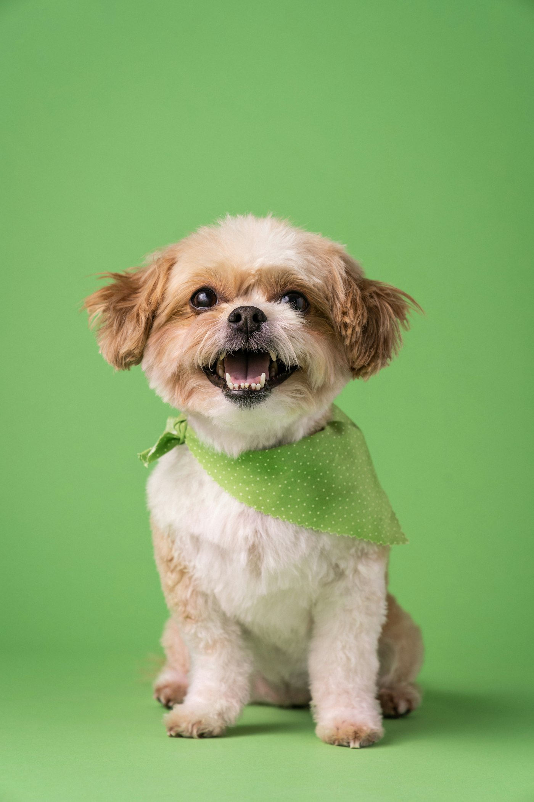
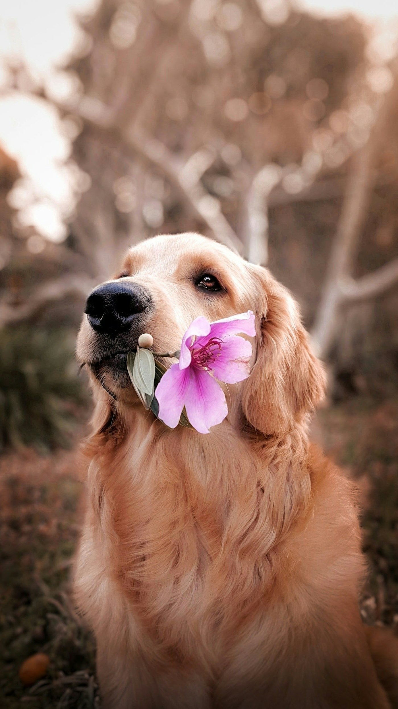
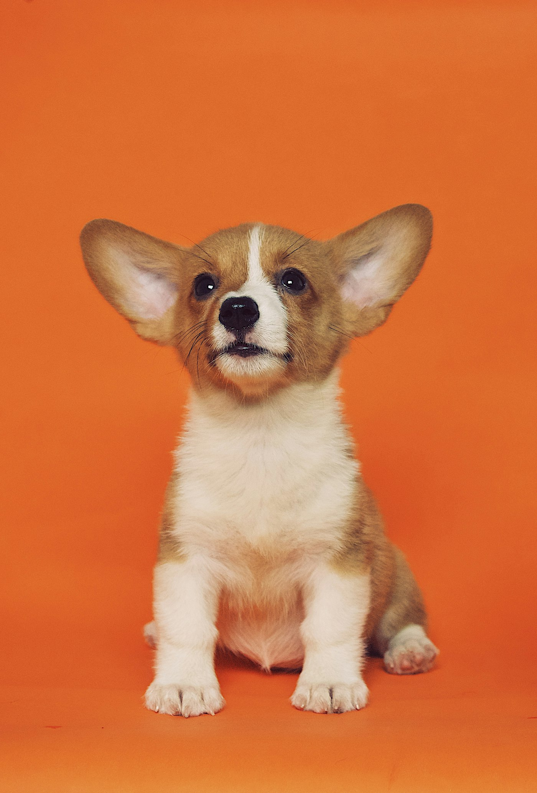
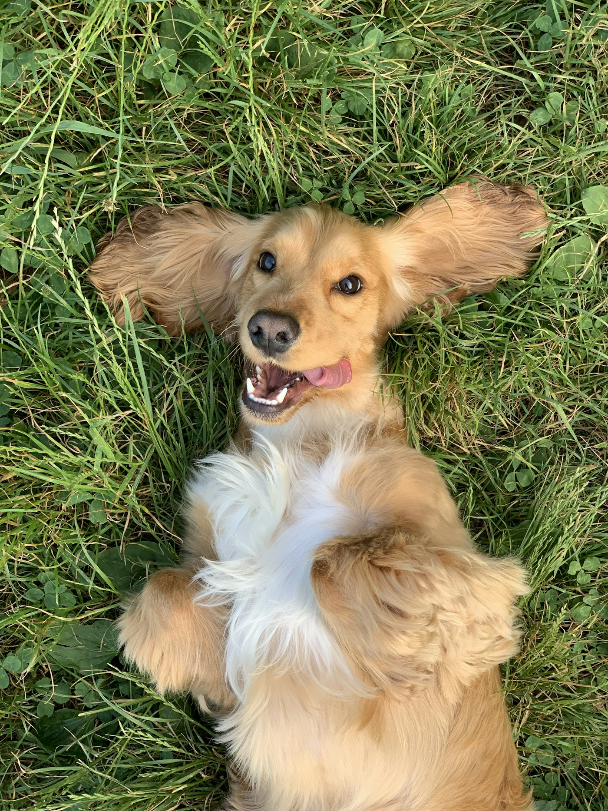

What we do
Grooming that's kind, careful and tail-wag approved.
Grouped the way owners book. Exact services & prices come straight from Shampooch before launch.
Full groom
Wash, cut, style and finish: the complete spa day for your pup.
Bath & tidy
A freshen-up between full grooms to keep them clean and comfy.
Nail & paw care
Gentle nail trims and paw tidying: quick, calm, stress-free.
Puppy's first cut
A gentle introduction so grooming becomes something they enjoy.
De-shedding & hand-dry
Less hair at home, a coat that looks and feels its best.
Add-ons
Teeth, ears and the little extras that keep them healthy.
"They treat every dog like their own; our pup actually pulls us through the door."Placeholder review · real, approved quotes added before launch
Recent grooms
Fresh cuts, happy tails.
A few of our recent visitors. We'll fill this with your own gallery of happy dogs once we're underway.








Shampooch became a Waterfall favourite the honest way: calm, careful grooming and dogs that can't wait to visit. This is a short draft in their own voice; the real story gets added before launch.
DRAFT · awaiting client: founding story, owner name, team photoBook / Visit